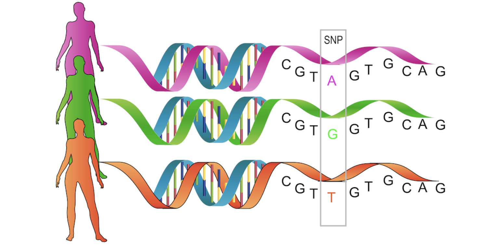

Genetic Theory Review
Quick Review of Genetic Theory
We all carry two nuclear genomes (i.e. genomes located in the cell nucleus), one inherited from each of our two parents. Additionally, we have a small mitochondrial genome, assumed to be inherited exclusively from the mother, but in this course, the term ‘genome’ refers to the nuclear genome.
The human genome is a 3.2 billion nucleotide (or base pair or DNA letter A, C, G, T) long sequence (see yourgenome.org), that is divided into separate physical pieces called chromosomes (see yourgenome.org). There are 22 autosomal (non-sex related) chromosomes and two sex chromosomes (X and Y chromosomes). Commonly, humans have two copies of each autosome. Individuals with one copy of X and one of Y are males, whereas those with two copies of X are females. An abnormal number of chromosomes, known as aneuploidy, typically leads to severe consequences or early death when present in all cells of an individual. However, a notable non-lethal exception is Down syndrome, characterized by the presence of three copies of chromosome 21. Another condition, mosaicism, occurs when only some cells in the body have abnormal chromosome numbers, a phenomenon often observed in cancer cells.
When we analyze genomes, we encounter three types of pairings:
DNA is typically a double-stranded molecule, where two strands (i.e. the two DNA molecules) are glued together by the chemical base pairings: A-T and C-G. This base pairing is crucial for DNA replication, which is necessary before any cell division [see yourgenome.org (https://www.yourgenome.org/video/dna-replication). The two DNA molecules connected through base pairing contain identical information though their sequences are complementary: A pairs with T and C pairs with G. To distinguish between the two DNA molecules, it is conventionally agreed that one is the forward strand (or positive strand) and the other is the reverse strand (or negative strand). Therefore, if the forward strand contains base A, the corresponding base on the reverse strand is T, and vice versa.
The two homologous chromosomes of an individual (for example, paternal chromosome 13 with maternal chromosome 13, or in males, maternal X and paternal Y) are considered a pair. Therefore, the human genome consists of 22 autosomes plus X and Y chromosomes. Each individual possesses two copies of each homologous chromosome, resulting in a total of 46 unique chromosomes organized into 23 pairs of homologous chromosomes.
Before any cell division each of the 46 unique chromosomes of an individual undergoes replication (“copies itself”). The two resulting copies (known as sister chromatids) physically pair with each other to form an X-like shape often used in chromosome pictures. This pairing of sister chromatids after replication is crucial for ensuring that each resulting cell receives the correct set of chromosomes during cell division. In mitosis (ordinary cell division), each of the two new cells receives a complete set of 46 unique chromosomes. However, in meiosis, which forms gametes (sperm and eggs), each gamete ends up with only one copy of each homologous chromosome, resulting in 23 unique chromosomes per gamete. During meiosis, the process of recombination shuffles the homologous copies of paternal and maternal chromosomes. This shuffling ensures that each offspring’s chromosomes are a mixture of segments from its grandparents’ chromosomes.
Other important terms
Genes: are segments of DNA that encode for proteins (see yourgenome.org). Variations in the physical structure of proteins or the timing and location of protein synthesis can lead to observable traits. Therefore, understanding how genetic variation impacts gene function and the phenotypic consequences is crucial, although much of this remains to be explored. Protein-coding genes constitute less than 2% of the entire human genome, while the remaining 98% plays a critical role in regulating gene activity through various mechanisms.
Locus (pl. loci): refers to a continuous region of the genome, which can vary greatly in size from a single nucleotide site (1 base pair) to a region spanning millions of base pairs (e.g., 10 Mbp).
GWAS loci: are regions of the genome that exhibit a significant statistical association with a particular phenotype of interest.
Genetic variants
At any given position in the genome (e.g., nucleotide site at position 13,475,383 of chromosome 1, denoted as chr1:13,475,383), variations can exist between individuals in the population. For instance, my paternal chromosome might have a base A, while my maternal chromosome has a base G (on the + strand of DNA) at that position. Such a single-nucleotide difference, at that specific position in the genome, is known as a single-nucleotide variant (SNV), and these two versions are called alleles. In this example, I would carry both allele A and allele G at that SNV, while you might have two copies of allele A at the same SNV. My genotype would be AG, and yours would be AA.
An individual who has different alleles on their two genomes is heterozygous at that locus, whereas someone with two copies of the same allele is homozygous at that locus. If neither allele is very rare in the population—specifically if the minor allele frequency (MAF) is > 1%—the variant is referred to as a single-nucleotide polymorphism (SNP). SNPs are used as markers in evolutionary biology and constitute the most common form of variation that may have consequences at the phenotypic level and be associated with certain diseases. There are over 10 million SNPs identified in the human genome.
More complex genetic variations include structural variation (SV) such as copy number variants (CNVs), which include duplications or deletions of genomic regions, as well as rearrangements of the genome, like inversions or translocations of DNA segments (see yourgenome.org).

A defined set of 500,000 to 1,000,000 SNPs can be measured reliably and affordably (less than 50 euros per sample) using DNA microarrays, which has been pivotal in enabling GWAS. In this course, we primarily focus on SNPs as the standard type of genetic variation. Typically, SNPs are biallelic, meaning there are only two alleles present in the population, which is the assumption we follow. In principle, however, all four possible alleles of a SNP could be present in the population.
Ambiguous SNPs
If the two alleles of an SNP are either (C,G) or (A,T) we call the SNP ambiguous because the strand information must be available (and accurate) to correctly interpret the genotypes at such SNP. For instance, allele C on the positive strand would be equivalent to allele G on the negative strand. If different studies report the SNP with respect to different strands, it can lead to mixed-up results. This issue does not occur with SNPs whose alleles are A, and C, because alleles T and G would correspond on the opposite strand, allowing unambiguous matching of A to T and C to G across studies. Ambiguous SNPs can generally be resolved reliably based on allele frequencies, as long as the minor allele frequency is not close to 50%. When combining multiple studies, it is crucial to begin by plotting allele frequencies between studies. This helps ensure that the alleles are consistently matched across studies before comparing frequencies to verify consistency.
Some catalogs of genetic variation
The human genome map is constantly improving, leading to updates in SNV/SNP coordinates and new discoveries with each new build. The current build is GRCh38 (hg38), published in 2013, while its predecessor, GRCh37 (hg19), is still in use for some data sets. Always specify the genome build when sharing genomic coordinates, as positions can differ between builds. There are tools like LiftOver that can help map coordinates between builds.
A large part of the genetics research over the last 30 years has been driven by international projects aiming to catalog genetic variation in the public domain.
| Database | Year | Description |
|---|---|---|
| The Human Genome Project | 1990-2003 | Established a first draft of a human genome sequence. Collins and Fink (1995). |
| The HapMap project | 2002-2009 | Studied the correlation structure of the common SNPs. Gibbs et al. (2003). |
| The 1000 Genomes project | 2008-2015 | Expanded HapMap to genome sequence information across the globe and currently remains a widely-used reference for global allele frequency information. 1000G project was able to characterize well common variation in different populations, but missed many rare variants of single individuals because the costs of very accurate sequencing were too high. The tremendous impact of the 1000G project stems from the fact that everyone can download the individual-level genome data of the 1000G samples from the project’s website and use it in their research. Auton et al. (2015). |
| Exome Aggregation Consortium (ExAC) | 2014-2016 | Concentrated only on the protein-coding parts of the genome, so-called exons, that make up less than 2% of the genome and was able to provide accurate sequence data for the exomes of over 60,000 individuals. This effort has been particularly important for the medical interpretation of rare variants seen in clinics that diagnose patients with severe disease. ExAC provides summary-level information through browsers and downloads but individual-level data cannot be downloaded. Lek et al. (2016). |
| Genome Aggregation Database (gnomAD) | 2016-2020 | Is expanding the ExAC database and also includes additional whole genome sequencing information. It is the current state-of-the-art among the public genome variation databases. Chen et al. (2024). |